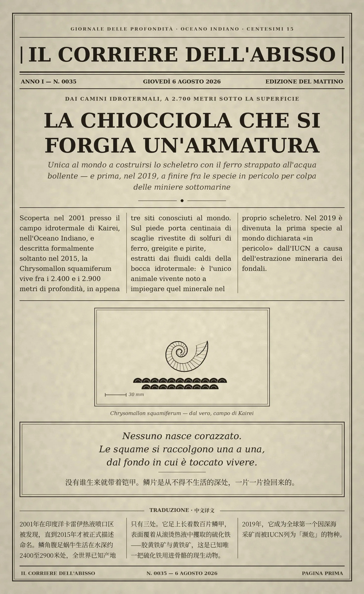

Nessuno nasce corazzato. Le squame si raccolgono una a una, dal fondo in cui è toccato vivere. / 没有谁生来就带着铠甲。鳞片是从不得不生活的深处，一片一片捡回来的。
Scoperta nel 2001 presso il campo idrotermale di Kairei, nell'Oceano Indiano, e descritta formalmente soltanto nel 2015, la Chrysomallon squamiferum vive fra i 2.400 e i 2.900 metri di profondità, in appena tre siti conosciuti al mondo. Sul piede porta centinaia di scaglie rivestite di solfuri di ferro, greigite e pirite, estratti dai fluidi caldi della bocca idrotermale: è l'unico animale vivente noto a impiegare quel minerale nel proprio scheletro. Nel 2019 è divenuta la prima specie al mondo dichiarata «in pericolo» dall'IUCN a causa dell'estrazione mineraria dei fondali. / 2001 年在印度洋卡雷伊（Kairei）热液喷口区被发现，直到 2015 年才被正式描述命名。鳞角腹足蜗牛（Chrysomallon squamiferum）生活在水深约 2400 至 2900 米处，全世界已知产地只有三处。它足上长着数百片鳞甲，表面覆着从滚烫热液中攫取的硫化铁——胶黄铁矿与黄铁矿，这是已知唯一把硫化铁用进骨骼的现生动物。2019 年 7 月，它成为全球第一个因深海采矿而被 IUCN 列为「濒危」的物种。
冷知识由执笔的模型自行查证。逐条断言、来源与所引原句存档在纯文字副本里，未经程序逐字校验，留作事后核实。